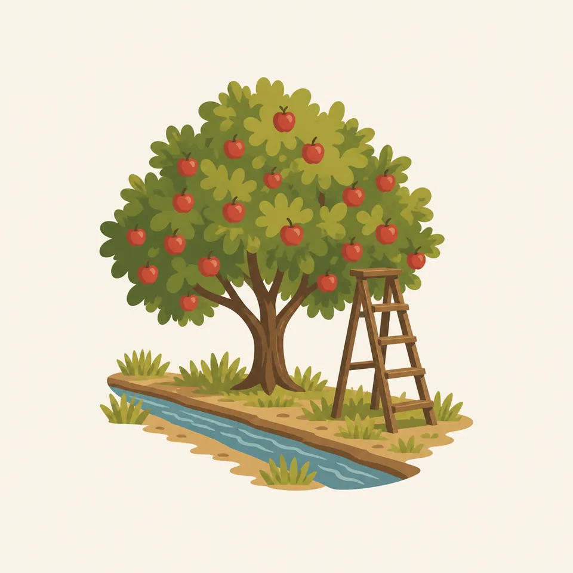
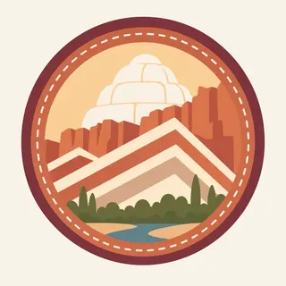

01
Fruita and the cliffs
Orchards, the river, and a wall of Navajo and Wingate stone. Pick fruit only in the way the park currently allows. The rules are seasonal and posted. They are not a tradition you invent.
TrailMark Archive Edition
Utah | Waterpocket Fold
A wrinkle in the plateau makes a long cliff of domes and reefs, with orchards tucked in the only easy gap.
Archive No. TM-CARE-013
National Park since 1971
Collection Southwestern Parks
Park Overview
Capitol Reef National Park follows the Waterpocket Fold, a monocline in south-central Utah's Colorado Plateau. The fold lifts and tilts rock layers into a long barrier of cliffs and domes.
Most visitors meet it at Fruita, where the Fremont River cuts through the reef and Mormon settlers planted orchards against the cliffs. The fruit trees are part of the park, not a town that wandered in.
The name mixes two images: white domes that reminded people of the Capitol, and cliffs that blocked travel the way a reef blocks a ship. Both are still visible from the scenic drive.
Emotional Thesis
Other Utah parks offer a canyon or a crowd of arches. Capitol Reef offers a geologic hinge so long that the scenic drive only samples it.
The orchards make the geology feel inhabited. That is useful, and it is also a risk: the park is not a farm stay with cliffs for decoration.
Landscape Highlights
01
Orchards, the river, and a wall of Navajo and Wingate stone. Pick fruit only in the way the park currently allows. The rules are seasonal and posted. They are not a tradition you invent.
02
Pale rounded Navajo sandstone above darker cliffs. The domes are the feature that earned the Capitol half of the name. They photograph as architecture because the wind and water rounded them that way.
03
Cathedral Valley and the southern fold are dirt-road country. They are how you learn the reef does not end at the visitor center. Check road conditions with NPS. After rain they are a different substance.
Wildlife
The Fremont River makes a green line through stone that otherwise supports desert wildlife: deer, bighorn in the backcountry, and birds using the orchard and the cottonwoods.

01
Mule deer in Fruita are habituated and still wild. Do not feed them, even when they are already in the orchard.
02
Desert bighorn use the reefs away from the picnic tables. Seeing one should not become a pursuit.
03
The orchards attract people and wildlife both. Fallen fruit is not a feeding station you improve.
Geology
The Waterpocket Fold is a monocline: rock layers bent so that what is buried on one side stands exposed on the other. The scenic drive is a tour of those exposed edges.
01
Wingate cliffs, Chinle slopes, and Navajo domes stack in an order you can learn in an afternoon and still not finish.
02
The fold runs roughly north-south for a distance usually described as nearly a hundred miles. The park protects a long piece of it, not a single viewpoint.
03
Erosion along the bend makes the reefs, canyons, and the waterpockets. The orchard exists only because the river found a gap.
Blossom in the orchards and cool hiking in the canyons. Water in the washes depends on snow above. Ask before you wade a narrow canyon.
Heat against the cliffs, and fruit ripening on the historic trees. Harvest rules are posted for a reason. Thunderstorms can fill a wash while Fruita still looks calm.
Cottonwoods turn along the river and the cliffs take a lower sun. The scenic drive is generous in this light.
Quiet orchards, possible snow on the fold, and dirt roads that become clay. The paved drive remains the reliable introduction. Check NPS before the remote districts.
Photography
Capitol Reef is a long structure. A single cliff photo could be anywhere in Utah. The orchard, the tilt, or the repeated reefs make it this park.
01
Include a layer that is clearly bent or repeated down the road. That is the fold.
02
A fruit tree against Wingate stone tells two histories at once. Use it.
03
Photograph from the walkway. Do not chalk, wet, or touch the figures to make them darker.
Field Notes
Capitol Reef is the Utah park that asks you to learn a shape, the monocline, and then notice that people planted peaches in the gap.
TrailMark Field Notes

Badge Story
The badge should suggest a reef of stone and a dome, with a little green for the orchard that makes the park recognizable.
White dome over red cliff is the Capitol half of the name.
Green at the base is Fruita, not a generic meadow.
It should not collapse into another red-rock circle. The bend is the idea.
Archive No.013
LocationWaterpocket Fold
ReleaseFold Mark
Stewardship / Safety
Capitol Reef feels gentle at Fruita and less gentle in a narrow canyon after rain. Check NPS for fruit rules, roads, and weather.
Pick fruit only where and when the park says you may. The trees are historic resources.
Do not enter a slot or narrow canyon when storms are in the drainage above you.
Dirt roads on the fold change with a small amount of rain. The scenic drive is the fallback, and it is a good one.
Leave petroglyphs and historic buildings unaltered. Looking is the whole interaction.
Current conditions, fees, and alerts are on the National Park Service site.
Continue the Archive
Arches is the span park to the east. Canyonlands is the river maze. Zion, already open, is the cliff park you enter from below.